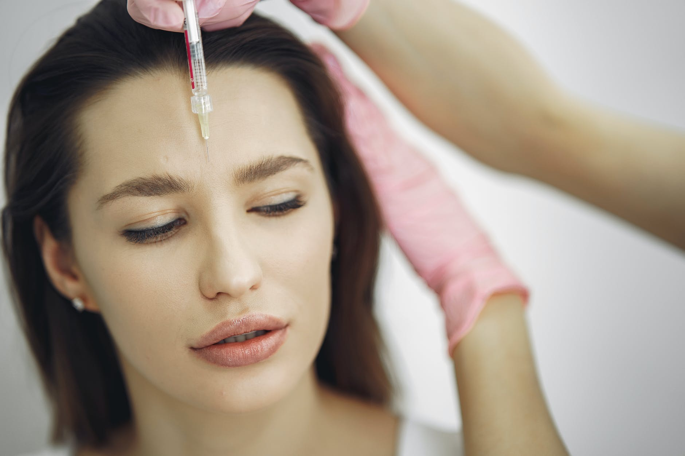
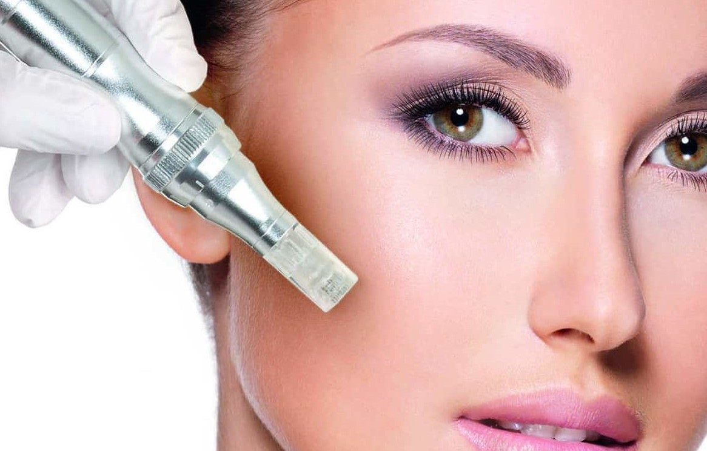

Lip Fillings
Lip augmentation is an aesthetic procedure designed to give you fuller, plumper lips. It’s a treatment that’s proving to be as appealing to millennial’s as well as to more mature audience, catering to both women and men. A dermal filler, a naturally occurring sugar found within the skin called hyaluronic acid, is injected with a very fine needle into the lips. The results are lips that are more contoured, more enhanced. Dermal fillers can both enhance a younger lip and volumise the ageing lip. Starting at just €250.
- Replenishes lost volume
- Natural results
- Highly trained team
- Non-invasive, non-surgical
Botox
Fine lines under the eyes, Crow’s feet, forehead wrinkles – they are all the dreaded tell-tale signs of aging. But now, thanks to anti-wrinkle injections, you can achieve a well-rested, youthful look which is subtle, yet incredibly effective. We can’t stop the clock on aging, but we have the power to slow it down. Anti-wrinkle injections are on the frontline of anti-ageing treatments. When injected in small doses into targeted areas, anti-wrinkle injections block the signals between the nerves and the muscles, causing the muscles to relax. They reduce the appearance of lines to produce a look that is fresh, more youthful and, most importantly, natural. Starting at €300.
- Non-invasive
- Quick treatment
- No pain
- Long lasting Results
Micro Needling
Micro needling is an ever increasingly popular and safe skin renewal technique which restores the youthful, healthy appearance of your skin at a much lower cost compared to similar treatments and has almost no “downtime”. It gives similar results to ablative techniques such as deep chemical peels, lasers and fraxel, and is therefore is less invasive and does not require the removal of the skin’s surface. Because of this, healing time is also shorter and there is less chance of post treatment sensitivity to UV light. Microneedling is unique as one of the very few skin treatments sui table for treating all skins, such as fragile skin around the eyes, mouth, on the neck and on ethnic skins. The basic concept of microneedling is based on the skin’s natural ability to self repair when it is physically damaged by cuts, burns and other abrasions. Following injury to the skin, the body re-uses damaged collagen and elastin fibres to produce new structures. Starting at €100.
- Improves skin texture
- Restores tightness and firmness
- Smoothes away and plumps wrinkles
- Reduces appearance of acne scars.